DRON design system and guidelines
The DRON design system holds everything a screen is made of and everything it says: the voice, the tokens, the components and the patterns. It exists so that a client handing a job to a stranger with a flying machine sees one calm, precise product on every screen, and so that anyone building a screen starts from what is already decided and measured against HIG and WCAG.
Tone of voice
How the product speaks. Every string is written and checked against these rules, and in trouble the product is plain and accountable, never cheery. For more, see Tone of voice.
- PrinciplesFive rules every string is checked against.
- VocabularyOne concept, one word: order, job, operator, issue.
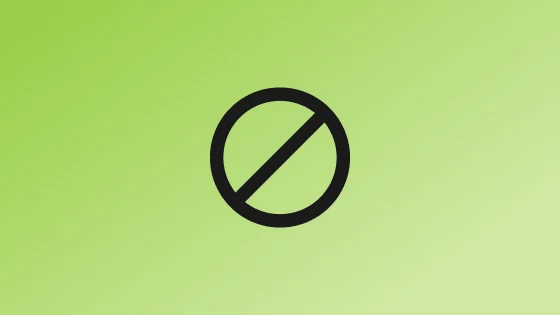
Don't useClichés, cheer, exclamation marks and "successfully".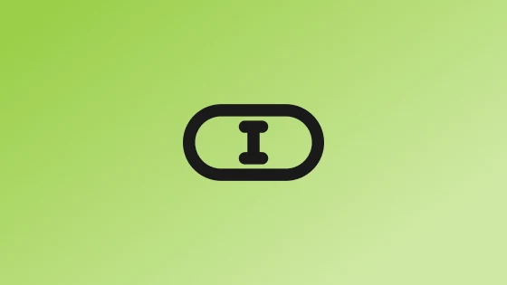
MicrocopyRules by element: buttons, errors, empty states, hints.
Tokens
The values every component reads: colour, type, length, depth, motion, each named for its job and measured in both themes. For more, see Tokens.
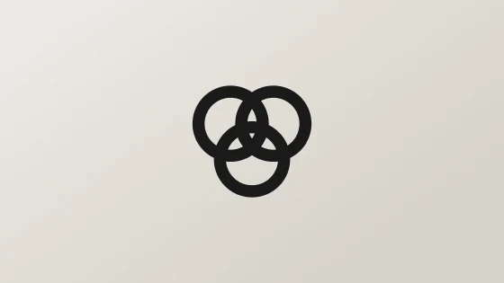
ColourWarm surfaces, one green accent as a fill, every pair measured.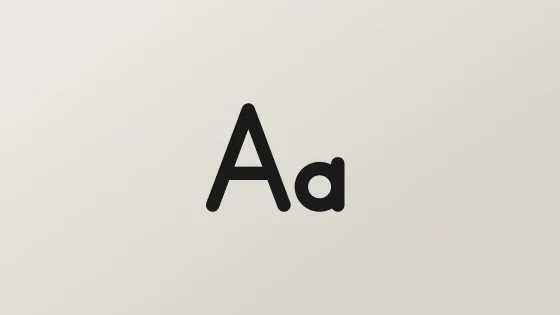
TypographyTen steps in SF Pro, none below HIG's 11pt.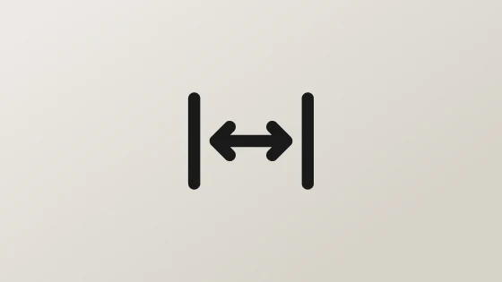
LengthOne ramp for space, radius and size, on an 8px grid.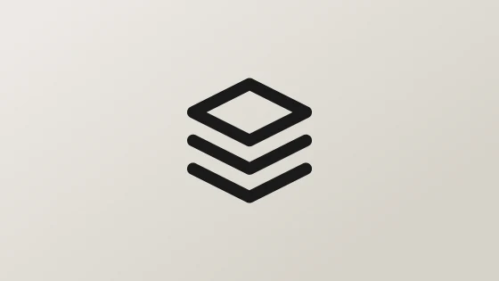
Shadow and elevationFlat surfaces; depth only on what floats.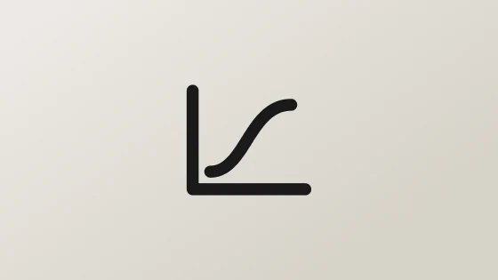
MotionThe times and easings, and what reduced motion keeps.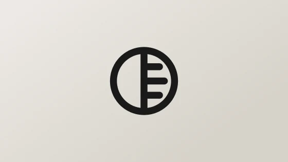
Light and darkThe semantic tier redrawn for the dark build.
Components
The bricks: 61 components, each drawn live by the stylesheet the product links, with its anatomy, variants, states and rules. For more, see Components.
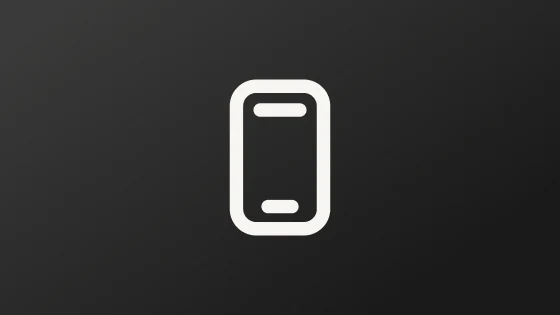
ShellThe status bar, the nav bar, the tab bar and the action bar.- ActionsButtons, the floating action, call controls.
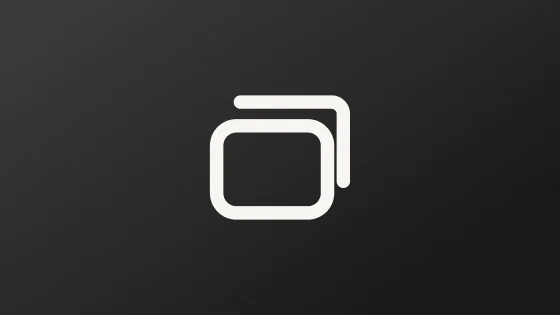
SurfacesCards, rows, sheets, the finder, the map.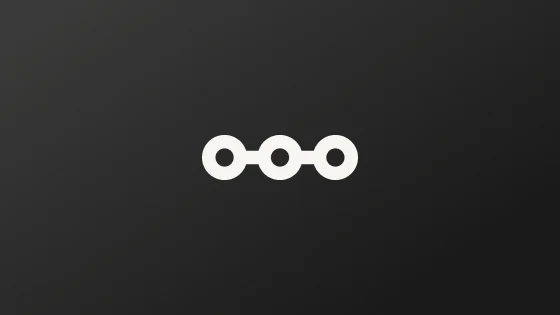
ProgressThe progress rail and the pager.- StatesMessages, outcomes, skeletons and the toast.
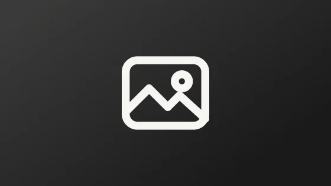
MediaThe media well and the photo pile.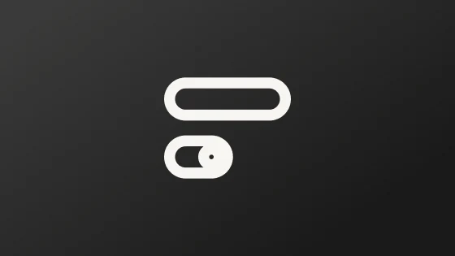
FormsFields, checkboxes, switches, pickers, upload.
Patterns
The compositions of components that already repeat on three or more screens. Take one when a new screen does a job an existing one already does. For more, see Patterns.
- Pushed screenBack, a title, zones and the decision at the bottom.
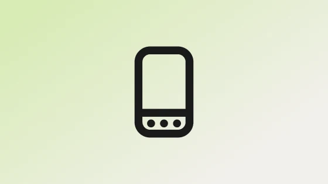
Tab rootOne of the four tabs, with no back.- Whole-screen messageNothing to show, one way out.
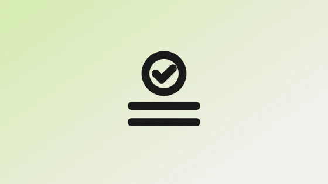
Outcome with its recordThe fact, the receipt, the next step.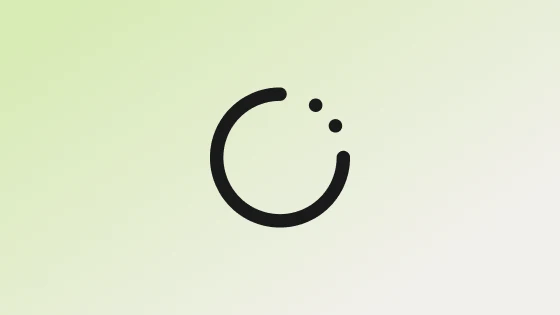
Waiting outcomeA hand-off to Diia, the bank or Apple Pay.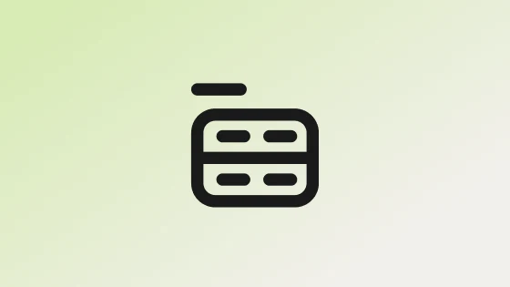
Labelled detail rowsFacts grouped by topic, key and value.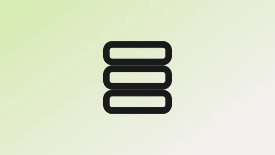
Labelled card listRecords of one kind, one card each.- Balance firstOne figure leads; the rest explains it.